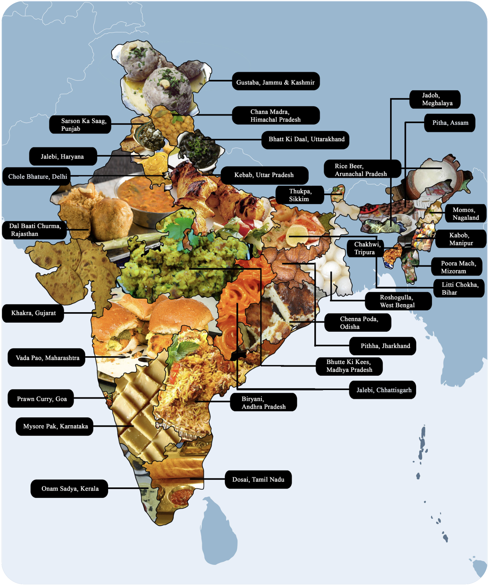

Mirchi Masala is a small business that hopes to share and spread the love and appreciation of Indian food with the Ann Arbor community.
Mirchi Masala first opened in fall of 1990. The name comes from two centric things that the Indian food revolves around. Mirchi means spicy. Indian food has a lot of heat to it that really stimulates one's senses. Masala means spice which reflects the diversity of lentils, spices, and nuts used in Indian cooking
